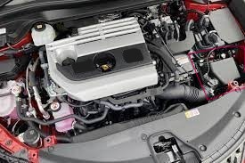

Replacing Engine Air Filter
Tools / Parts Needed
- Engine Air Filter
- Philips Screw Driver
- Socket Set w/ Ratchet
1. Open your Hood
Begin by opening your hood and locating your engine air filter. The air filter is often near your engine bay's front left or right side. If your filter is a part of your engine cover, do not continue with the replacement.
2. Opening Air Box
Most air boxes can be opened by unsnapping the clips, but some may require a Philips screwdriver, socket, or ratchet to open the box.
3. Rplacing Air Filter
Remove the old air filters and install the new air filter, ensuring they are of similar size and fit correctly to the older filter.
4. Closing Air Box
Move the clips back to their original position, or replace screws or bolts with your tools, ensuring the box is resealed as before next, close the Hood.